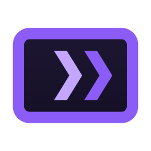
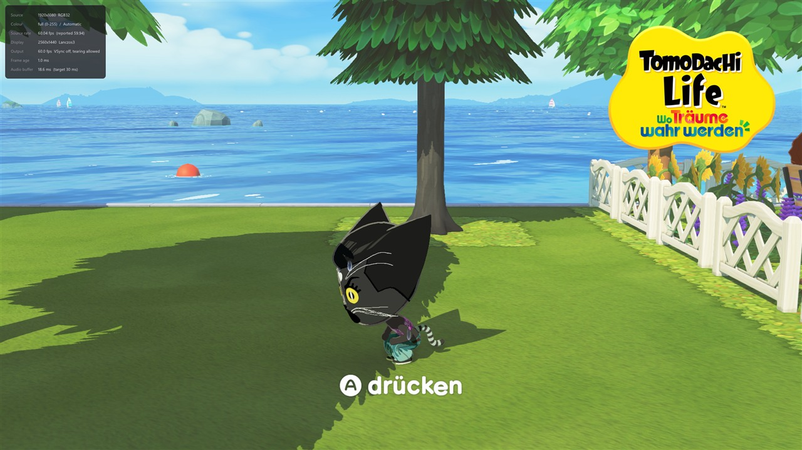
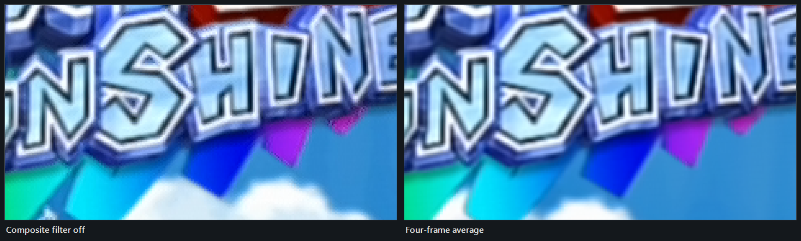
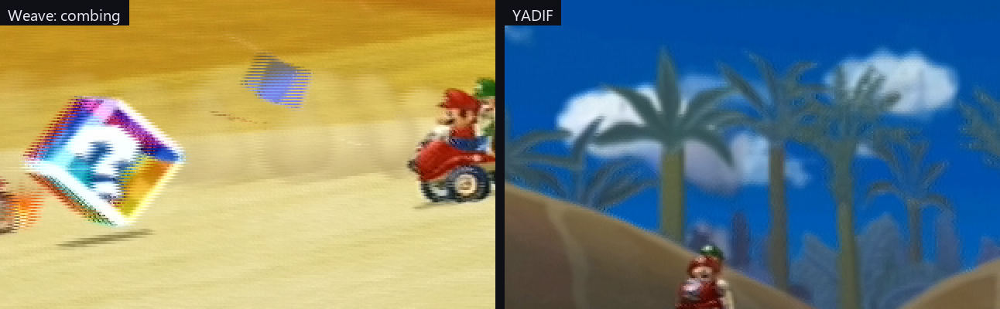

A low-latency viewer and recorder for DirectShow capture cards on Windows. Built to be played on, not just watched.
One file, about 2 MB. No installer, nothing written to the registry.

A capture card's picture normally arrives too late to play on. CapView takes the queue out of the path so the console on your desk behaves like a console on a television — while still recording, screenshotting and feeding a virtual camera.
Frames are copied into a triple buffer and the filter returns at once. Anything arriving faster than it can be shown is dropped, never buffered, so delay cannot accumulate.
The DirectShow graph runs without a reference clock, so nothing is held back waiting for a presentation time.
A flip-model swap chain with one frame of queue and VSync off by default — the single biggest lever there is.
YUY2, UYVY, NV12, planar 4:2:0, RGB and P010 are unpacked in a pixel shader. Nothing touches the CPU between arrival and drawing.
The overlay times the one stretch CapView is answerable for: from a frame arriving to the present that hands it over. Upload, deinterlacing, filters, scaling and the wait for the flip are all inside that number. What the card did before, and what the panel does after, is nobody's to measure from in here — so it is not quietly folded in.
Composite carries colour and brightness on one wire and they leak into each other. Most viewers leave that alone. CapView removes it in real time, and the numbers behind every setting were measured on real hardware rather than guessed.

| Half | What it does | What it costs |
|---|---|---|
| Four-frame average | Cancels dot crawl wherever the picture stands still. Four, because the subcarrier walks a four-frame cycle — measured 1.91, 2.62, 1.90 and 0.78 at lags of one to four. | Nothing at all. |
| Synchronous demodulator | Reconstructs the subcarrier out of the brightness and subtracts it, so moving content is covered too. Removes 81 % of the pattern at a window of nine samples. | 17 % of horizontal sharpness. |
Whether a source is interlaced is measured from the picture, not read from the media type — a media type is entitled to say so and frequently does not.

An analogue decoder has to be told whether it is looking at PAL, NTSC or SECAM, and getting it wrong costs you either the picture or the colour. Leave it on automatic and CapView finds it — and keeps finding it, so switching a console between 50 and 60 Hz needs nothing from you.
All a decoder reports is whether it has locked, and that is about line frequency. PAL 60, NTSC M, PAL M and NTSC 4.43 all lock on the same 525 lines, and it reports the wrong one just as confidently.
The candidates are compared on what they actually produce: how much colour there is, and whether black stays black. Decoding PAL as SECAM does not give a grey picture — it gives a bright red one where black should be, and that is what the second measurement catches.
Measured against a GameCube at 60 Hz, starting from a deliberately wrong standard: 1.7 to 2.4 seconds, where the same path used to take six. The lock costs a third of a second, and every candidate after it is measured for only as long as its reading takes to stand still — instead of all of them waiting out whatever the slowest one needs.
A standard with the wrong line count never locks; it only uses up its deadline. So the list is walked quickly first and patiently only if that finds nothing — nothing is ruled out for good, and the common case, a console switched between 50 and 60 Hz, is over in a fraction of the time.
PAL 60 and NTSC 4.43 carry colour at the same frequency and differ only in that PAL reverses the phase every other line. The wrong one of the pair does not decode nonsense — it decodes less, so counting colour rewards it for the omission. CapView measures the reversal itself instead, and drops the standard that fights the signal.
F7 runs both stages again on the picture in front of you — the one case the automatic search cannot see, because colour that is wrong is still colour. It takes under two seconds, and it tells you what it found either way.
A card advertises the same list whatever is plugged into it — this one offers everything up to 1920×1080 at 60 Hz with a PAL composite cable in front of it. Once the standard is known the raster is too, so the resolution offered by default is capped to what is really arriving instead of upscaling a console to 1080p inside the card. The rate list gains a mode to match: the signal's rate, 50 under PAL, 59.94 under NTSC, a flat 60 under PAL 60 — worked out afresh every time the card is opened rather than written down as a number that the next mode change makes wrong.
A comparison needs a picture to compare on. If the scene moves during the round, or the screen is essentially black, the round is thrown out rather than believed — a wrong answer held confidently is worse than waiting a moment.
H.264, H.265 or AV1 through NVENC, Quick Sync, AMF, x264 or x265. The audio is the master clock, so the output is constant frame rate and does not drift — measured at 1 ms over 15 seconds.
Rate control, preset, tuning, look-ahead, adaptive quantisation and multipass, under one set of names translated into each vendor's own.
Offer the picture to OBS, Discord or a browser at the source's own resolution and frame rate — and to anything that cannot take that, at whatever it asks for instead.
PQ and HLG are decoded to linear light, tone mapped with BT.2390 for an ordinary screen or passed through as scRGB for an HDR one.
PNG or JPEG at source resolution through Windows Imaging Component, so no ffmpeg is needed. JPEG XR keeps the HDR range and needs none either; AVIF does. A switch grabs the finished window instead, interface and all.
Full or limited is read off the picture rather than inferred from the pixel format, and the numbers behind the verdict are on show: lowest and highest sample, and how much of the picture sits below 16. It holds until the format changes — and F6 measures it again for the one thing that changes without touching the format, an option in the card's own driver.
Device, input, capture format and every picture and audio setting, one per source, on Ctrl+1 to Ctrl+9 — or on none at all: a profile can name the video standard that means it, and the standard the search settles on then picks the profile.
Scenes, overlays, compositing and streaming are not here and are not planned. For those, use OBS — and note that a card grants its capture pin to one process at a time, so the two cannot hold the same card at once.
| Requirement | |
|---|---|
| Windows 10 or later | the virtual camera installs with one UAC prompt |
| A DirectShow capture device | almost every card, including USB ones |
| ffmpeg | for recording and AVIF screenshots, fetched by a button |